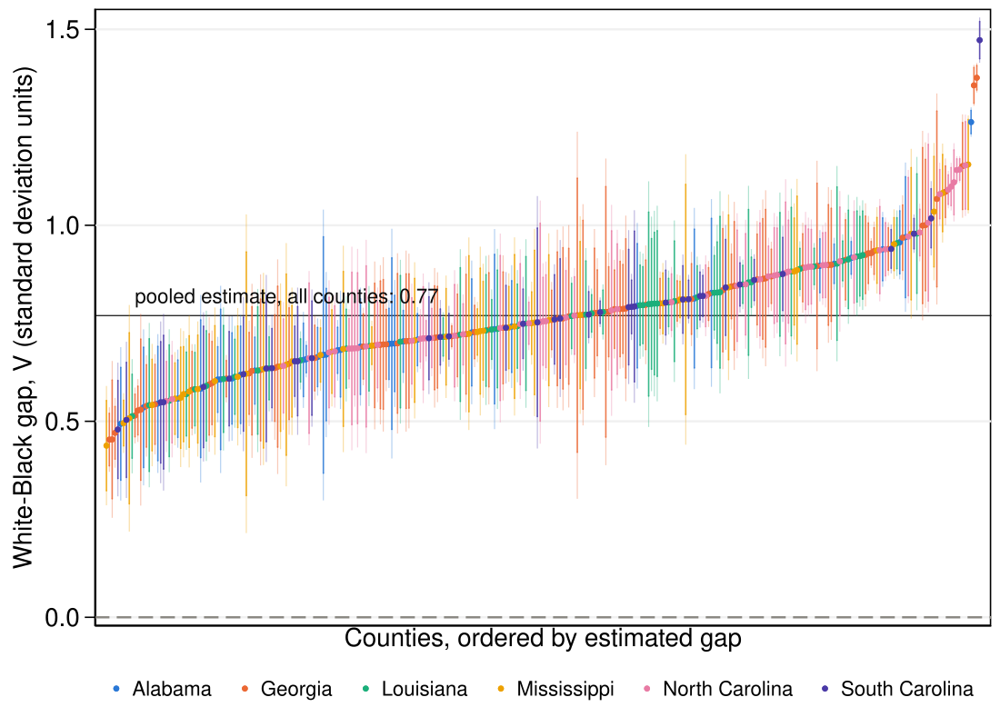
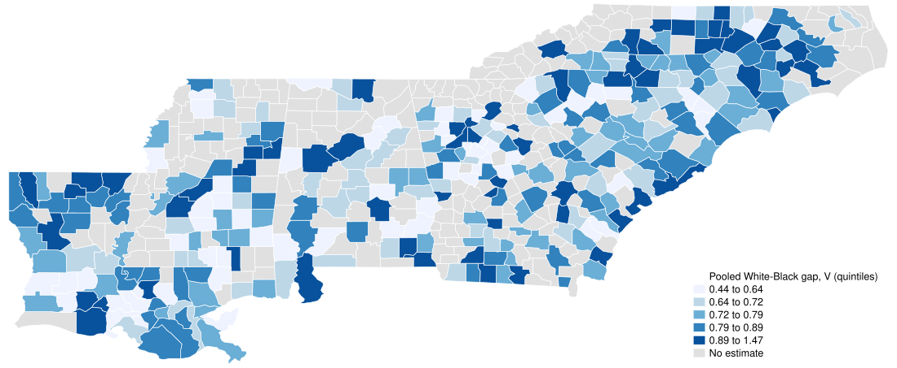
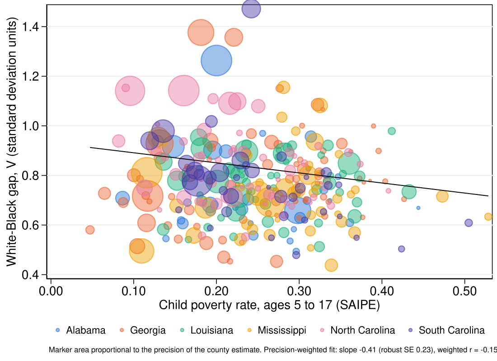
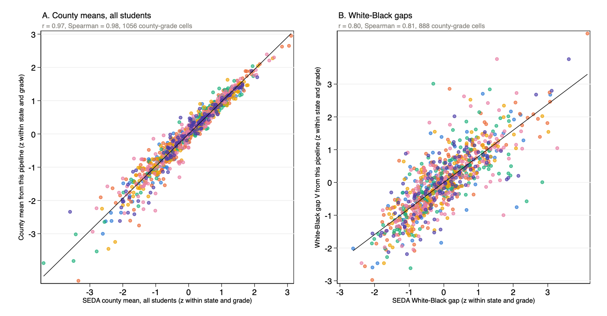

The federal record of state testing is public, complete and coarse. For every district, grade and student group, EDFacts publishes the number of students tested and the share who scored at or above the state's proficient standard, in ranges when the group is small. It publishes no scores, and each state tests with its own instrument against its own standard. A difference of ten percentage points in proficiency means one thing in a state with a demanding standard and another in a state with a lenient one, and the same difference means different things at the top and at the bottom of the distribution (Ho 2008).
This page reports what can nonetheless be learned from that record about the gap between White and Black students in mathematics, for the counties of Alabama, Georgia, Louisiana, Mississippi, North Carolina and South Carolina in school year 2018-19. The gaps are expressed in standard deviation units of student achievement, a metric that does not depend on the state's test or standard, so they can be placed side by side across states. The page describes differences in measured achievement between groups of children who go to school in very different conditions. It does not attribute those differences to the children, and it does not identify their causes.
Chapter 1Counts by category, not scores
States report test results to the federal government as counts of students in ordered performance categories. The categories carry real information about where a group's scores lie, but the information is coarsened: a student at the bottom of "proficient" and one at the top are the same student in the count. Ho and Reardon (2012) showed how to estimate the gap between two groups from such counts, and Reardon, Shear, Castellano and Ho (2017) how to recover each group's mean and standard deviation. Their model, a heteroskedastic ordered probit, treats the categories as cuts through a continuous distribution and estimates where each group's distribution sits relative to cut scores shared by the groups in the fit, here the three groups of a county and grade.
The public files add a second coarsening. They publish one cut, the proficient standard, not the full set of categories. The pipeline behind this page therefore reconstructs four categories from each group's proficiency rate under two stated assumptions: scores within a group are normally distributed with the same spread in every group, and the state's cut scores sit at fixed positions around the proficient standard. The assumptions fix the spread; what the data identify is where each group sits relative to the standard, and so the distance between groups. The gap is summarized as Ho's (2009) V, which is unchanged by any increasing transformation of a state's scale and which, under the normality assumed here, equals the difference in means divided by the pooled standard deviation.
The gap is estimated for every county and grade, then the three grades of a county are pooled into one estimate with weights that favor the more precise grades, following the meta-analytic model of Hedges and Vevea (1998). District cells with fewer than 50 tested students are set aside before aggregation, because the published rates for small groups are too coarse; this rule excludes 5.4% of the Black students tested in the six states. Counties then enter only when at least 50 Black students were tested in each grade, which keeps 355 of the 518 counties and a further 0.5% of the remaining Black test takers outside the sample. In 48 of those counties no district had 50 White test takers in any grade, so a gap is estimated for 307 counties.
Chapter 2What the counties show
In every one of the 307 counties, White students' average exceeds Black students' average. The HETOP interval lies above zero in 307 counties and the wider binomial interval in 307. The pooled gap across counties is 0.77 standard deviations. The median county has a gap of 0.76, and the middle 80% of counties lie between 0.58 and 0.95. For scale, a gap of 0.8 standard deviations means that the median Black student scores near the 21st percentile of White students in the same county.
The four largest gaps are in Charleston (South Carolina) at 1.47, Fulton (Georgia) at 1.38, DeKalb (Georgia) at 1.36 and Jefferson (Alabama) at 1.26; the three smallest in Panola (Mississippi) at 0.44, Clayton (Georgia) at 0.45 and Long (Georgia) at 0.45. The largest gaps are in the largest metropolitan counties of their states: among the ten counties with the most test takers, 9 have gaps above the median county. The smallest gaps occur in counties of every size. The gap changes little across grades: the pooling model's slope on grade is -0.004 standard deviations per grade.
White students' average exceeds Black students' average in every county, by 0.4 to 1.5 standard deviations

Show the table
| State | County | Gap (V) | 95% low, HETOP | 95% high, HETOP | 95% low, binomial | 95% high, binomial | Black tested per grade | White tested per grade | Child poverty | Black share | Districts | FIPS |
|---|---|---|---|---|---|---|---|---|---|---|---|---|
| Alabama | Jefferson | 1.26 | 1.23 | 1.29 | 1.23 | 1.30 | 3757 | 2991 | 0.20 | 0.49 | 12 | 1073 |
| Alabama | Dale | 0.97 | 0.82 | 1.12 | 0.78 | 1.16 | 97 | 234 | 0.26 | 0.31 | 3 | 1045 |
| Alabama | Montgomery | 0.96 | 0.88 | 1.04 | 0.86 | 1.05 | 1748 | 276 | 0.31 | 0.76 | 2 | 1101 |
| Alabama | Baldwin | 0.94 | 0.86 | 1.02 | 0.84 | 1.03 | 285 | 1787 | 0.13 | 0.12 | 1 | 1003 |
| Alabama | Madison | 0.92 | 0.88 | 0.96 | 0.86 | 0.97 | 1185 | 2102 | 0.15 | 0.29 | 3 | 1089 |
| Alabama | Tuscaloosa | 0.90 | 0.85 | 0.95 | 0.84 | 0.97 | 965 | 1039 | 0.20 | 0.43 | 2 | 1125 |
| Alabama | Houston | 0.90 | 0.83 | 0.97 | 0.81 | 0.99 | 478 | 593 | 0.21 | 0.41 | 2 | 1069 |
| Alabama | Clarke | 0.83 | 0.64 | 1.02 | 0.59 | 1.07 | 128 | 54 | 0.31 | 0.61 | 2 | 1025 |
| Alabama | Marengo | 0.81 | 0.64 | 0.99 | 0.58 | 1.04 | 117 | 71 | 0.33 | 0.59 | 3 | 1091 |
| Alabama | Butler | 0.79 | 0.64 | 0.95 | 0.58 | 1.01 | 142 | 84 | 0.35 | 0.63 | 1 | 1013 |
| Alabama | Tallapoosa | 0.74 | 0.62 | 0.86 | 0.58 | 0.90 | 145 | 278 | 0.33 | 0.35 | 2 | 1123 |
| Alabama | Henry | 0.74 | 0.54 | 0.93 | 0.48 | 0.99 | 60 | 120 | 0.24 | 0.31 | 1 | 1067 |
| Alabama | Chambers | 0.73 | 0.59 | 0.86 | 0.54 | 0.91 | 154 | 122 | 0.30 | 0.55 | 2 | 1017 |
| Alabama | Shelby | 0.71 | 0.64 | 0.77 | 0.63 | 0.79 | 381 | 1520 | 0.09 | 0.17 | 3 | 1117 |
| Alabama | Talladega | 0.70 | 0.62 | 0.78 | 0.60 | 0.81 | 347 | 467 | 0.24 | 0.40 | 3 | 1121 |
| Alabama | Escambia | 0.70 | 0.58 | 0.82 | 0.54 | 0.86 | 129 | 227 | 0.31 | 0.39 | 2 | 1053 |
| Alabama | Hale | 0.70 | 0.48 | 0.92 | 0.41 | 0.99 | 124 | 57 | 0.34 | 0.69 | 1 | 1065 |
| Alabama | Morgan | 0.70 | 0.61 | 0.79 | 0.59 | 0.81 | 207 | 923 | 0.18 | 0.15 | 3 | 1103 |
| Alabama | Limestone | 0.69 | 0.57 | 0.81 | 0.54 | 0.84 | 119 | 785 | 0.16 | 0.13 | 2 | 1083 |
| Alabama | Coffee | 0.68 | 0.56 | 0.80 | 0.53 | 0.83 | 116 | 455 | 0.20 | 0.19 | 3 | 1031 |
| Alabama | Lee | 0.68 | 0.62 | 0.74 | 0.60 | 0.76 | 542 | 981 | 0.19 | 0.29 | 3 | 1081 |
| Alabama | Chilton | 0.67 | 0.50 | 0.84 | 0.46 | 0.88 | 65 | 390 | 0.22 | 0.11 | 1 | 1021 |
| Alabama | Dallas | 0.67 | 0.37 | 0.97 | 0.30 | 1.04 | 427 | 50 | 0.44 | 0.87 | 2 | 1047 |
| Alabama | Calhoun | 0.66 | 0.59 | 0.74 | 0.57 | 0.76 | 321 | 845 | 0.23 | 0.27 | 5 | 1015 |
| Alabama | Mobile | 0.66 | 0.62 | 0.69 | 0.61 | 0.70 | 2063 | 1887 | 0.30 | 0.48 | 5 | 1097 |
| Alabama | Autauga | 0.66 | 0.56 | 0.75 | 0.53 | 0.78 | 201 | 463 | 0.19 | 0.26 | 1 | 1001 |
| Alabama | Russell | 0.63 | 0.54 | 0.71 | 0.52 | 0.74 | 428 | 265 | 0.30 | 0.51 | 2 | 1113 |
| Alabama | Lauderdale | 0.62 | 0.49 | 0.74 | 0.47 | 0.77 | 104 | 720 | 0.16 | 0.13 | 2 | 1077 |
| Alabama | Barbour | 0.61 | 0.49 | 0.73 | 0.45 | 0.77 | 197 | 257 | 0.36 | 0.46 | 2 | 1005 |
| Alabama | Washington | 0.61 | 0.43 | 0.79 | 0.37 | 0.85 | 57 | 125 | 0.24 | 0.25 | 1 | 1129 |
| Alabama | Elmore | 0.61 | 0.52 | 0.69 | 0.50 | 0.72 | 244 | 678 | 0.16 | 0.27 | 2 | 1051 |
| Alabama | Pickens | 0.58 | 0.41 | 0.76 | 0.34 | 0.82 | 105 | 76 | 0.29 | 0.58 | 1 | 1107 |
| Alabama | Etowah | 0.56 | 0.46 | 0.66 | 0.43 | 0.68 | 171 | 778 | 0.24 | 0.19 | 3 | 1055 |
| Alabama | St. Clair | 0.55 | 0.40 | 0.69 | 0.37 | 0.72 | 72 | 816 | 0.14 | 0.10 | 2 | 1115 |
| Alabama | Pike | 0.54 | 0.38 | 0.69 | 0.34 | 0.73 | 182 | 74 | 0.29 | 0.55 | 2 | 1109 |
| Alabama | Monroe | 0.49 | 0.35 | 0.64 | 0.30 | 0.69 | 126 | 110 | 0.30 | 0.51 | 1 | 1099 |
| Georgia | Fulton | 1.38 | 1.34 | 1.41 | 1.34 | 1.41 | 5950 | 2500 | 0.18 | 0.53 | 10 | 13121 |
| Georgia | DeKalb | 1.36 | 1.31 | 1.40 | 1.30 | 1.41 | 4646 | 1086 | 0.22 | 0.59 | 5 | 13089 |
| Georgia | Clarke | 1.15 | 1.04 | 1.26 | 1.02 | 1.28 | 488 | 185 | 0.28 | 0.48 | 1 | 13059 |
| Georgia | Lowndes | 1.09 | 1.02 | 1.15 | 1.00 | 1.17 | 684 | 595 | 0.32 | 0.45 | 3 | 13185 |
| Georgia | Greene | 1.07 | 0.84 | 1.29 | 0.80 | 1.34 | 82 | 73 | 0.33 | 0.45 | 1 | 13133 |
| Georgia | Peach | 1.00 | 0.83 | 1.17 | 0.79 | 1.21 | 144 | 84 | 0.30 | 0.51 | 1 | 13225 |
| Georgia | Toombs | 1.00 | 0.80 | 1.20 | 0.76 | 1.24 | 96 | 183 | 0.39 | 0.33 | 2 | 13279 |
| Georgia | Glynn | 0.97 | 0.88 | 1.05 | 0.86 | 1.08 | 347 | 451 | 0.24 | 0.35 | 1 | 13127 |
| Georgia | Chatham | 0.94 | 0.89 | 0.99 | 0.87 | 1.01 | 1671 | 658 | 0.19 | 0.57 | 1 | 13051 |
| Georgia | Muscogee | 0.93 | 0.87 | 0.99 | 0.86 | 1.01 | 1394 | 539 | 0.27 | 0.58 | 1 | 13215 |
| Georgia | Cobb | 0.93 | 0.90 | 0.96 | 0.89 | 0.97 | 2891 | 3196 | 0.13 | 0.31 | 3 | 13067 |
| Georgia | Bibb | 0.93 | 0.85 | 1.01 | 0.83 | 1.02 | 1271 | 305 | 0.35 | 0.73 | 3 | 13021 |
| Georgia | Thomas | 0.92 | 0.83 | 1.02 | 0.79 | 1.06 | 279 | 316 | 0.27 | 0.42 | 2 | 13275 |
| Georgia | Hall | 0.91 | 0.81 | 1.01 | 0.79 | 1.03 | 211 | 1041 | 0.19 | 0.08 | 2 | 13139 |
| Georgia | Emanuel | 0.90 | 0.75 | 1.04 | 0.71 | 1.09 | 136 | 151 | 0.33 | 0.41 | 1 | 13107 |
| Georgia | Crisp | 0.90 | 0.74 | 1.05 | 0.70 | 1.10 | 174 | 93 | 0.40 | 0.58 | 1 | 13081 |
| Georgia | Mitchell | 0.90 | 0.69 | 1.11 | 0.63 | 1.16 | 160 | 83 | 0.36 | 0.58 | 2 | 13205 |
| Georgia | Bulloch | 0.89 | 0.80 | 0.98 | 0.78 | 1.01 | 314 | 386 | 0.24 | 0.37 | 2 | 13031 |
| Georgia | Coweta | 0.87 | 0.80 | 0.94 | 0.78 | 0.96 | 395 | 1011 | 0.13 | 0.23 | 3 | 13077 |
| Georgia | Morgan | 0.86 | 0.69 | 1.04 | 0.64 | 1.09 | 64 | 159 | 0.19 | 0.26 | 1 | 13211 |
| Georgia | McDuffie | 0.86 | 0.71 | 1.02 | 0.66 | 1.07 | 170 | 100 | 0.30 | 0.56 | 1 | 13189 |
| Georgia | Colquitt | 0.86 | 0.75 | 0.98 | 0.71 | 1.01 | 181 | 292 | 0.33 | 0.26 | 1 | 13071 |
| Georgia | Grady | 0.85 | 0.68 | 1.01 | 0.63 | 1.06 | 113 | 140 | 0.30 | 0.33 | 1 | 13131 |
| Georgia | Troup | 0.84 | 0.76 | 0.93 | 0.73 | 0.95 | 407 | 381 | 0.26 | 0.43 | 1 | 13285 |
| Georgia | Monroe | 0.83 | 0.68 | 0.99 | 0.63 | 1.04 | 74 | 194 | 0.16 | 0.24 | 1 | 13207 |
| Georgia | Richmond | 0.82 | 0.76 | 0.89 | 0.74 | 0.91 | 1685 | 405 | 0.31 | 0.73 | 2 | 13245 |
| Georgia | Laurens | 0.81 | 0.72 | 0.90 | 0.69 | 0.93 | 292 | 314 | 0.32 | 0.46 | 2 | 13175 |
| Georgia | Houston | 0.81 | 0.76 | 0.86 | 0.74 | 0.87 | 907 | 959 | 0.17 | 0.38 | 1 | 13153 |
| Georgia | Columbia | 0.80 | 0.74 | 0.86 | 0.72 | 0.88 | 466 | 1204 | 0.10 | 0.21 | 2 | 13073 |
| Georgia | Ware | 0.80 | 0.68 | 0.91 | 0.65 | 0.95 | 174 | 228 | 0.32 | 0.37 | 1 | 13299 |
| Georgia | Ben Hill | 0.79 | 0.61 | 0.97 | 0.55 | 1.02 | 107 | 94 | 0.37 | 0.43 | 1 | 13017 |
| Georgia | Tift | 0.79 | 0.67 | 0.90 | 0.64 | 0.94 | 210 | 229 | 0.30 | 0.35 | 1 | 13277 |
| Georgia | Bryan | 0.79 | 0.66 | 0.91 | 0.63 | 0.94 | 124 | 494 | 0.11 | 0.16 | 1 | 13029 |
| Georgia | Floyd | 0.79 | 0.69 | 0.89 | 0.66 | 0.91 | 194 | 648 | 0.29 | 0.18 | 3 | 13115 |
| Georgia | Coffee | 0.78 | 0.66 | 0.89 | 0.63 | 0.93 | 172 | 250 | 0.33 | 0.31 | 1 | 13069 |
| Georgia | Sumter | 0.78 | 0.46 | 1.10 | 0.39 | 1.17 | 250 | 51 | 0.39 | 0.71 | 1 | 13261 |
| Georgia | Camden | 0.78 | 0.67 | 0.89 | 0.64 | 0.92 | 149 | 432 | 0.19 | 0.22 | 1 | 13039 |
| Georgia | Washington | 0.78 | 0.61 | 0.94 | 0.56 | 0.99 | 159 | 68 | 0.40 | 0.64 | 1 | 13303 |
| Georgia | Dougherty | 0.77 | 0.53 | 1.01 | 0.49 | 1.05 | 1053 | 85 | 0.38 | 0.89 | 1 | 13095 |
| Georgia | Brooks | 0.77 | 0.42 | 1.12 | 0.30 | 1.24 | 93 | 58 | 0.33 | 0.54 | 1 | 13027 |
| Georgia | Cook | 0.77 | 0.59 | 0.94 | 0.54 | 1.00 | 80 | 115 | 0.32 | 0.34 | 1 | 13075 |
| Georgia | Hart | 0.76 | 0.58 | 0.94 | 0.53 | 1.00 | 59 | 172 | 0.23 | 0.23 | 1 | 13147 |
| Georgia | Dodge | 0.76 | 0.59 | 0.93 | 0.53 | 0.99 | 71 | 136 | 0.30 | 0.36 | 1 | 13091 |
| Georgia | Carroll | 0.76 | 0.68 | 0.83 | 0.66 | 0.86 | 319 | 892 | 0.22 | 0.21 | 2 | 13045 |
| Georgia | Wayne | 0.74 | 0.60 | 0.88 | 0.55 | 0.92 | 99 | 267 | 0.27 | 0.23 | 1 | 13305 |
| Georgia | Burke | 0.73 | 0.59 | 0.88 | 0.54 | 0.92 | 190 | 88 | 0.30 | 0.64 | 1 | 13033 |
| Georgia | Fayette | 0.73 | 0.66 | 0.80 | 0.64 | 0.82 | 460 | 688 | 0.06 | 0.28 | 2 | 13113 |
| Georgia | Baldwin | 0.72 | 0.57 | 0.88 | 0.52 | 0.92 | 268 | 88 | 0.29 | 0.67 | 1 | 13009 |
| Georgia | Effingham | 0.72 | 0.61 | 0.82 | 0.59 | 0.85 | 153 | 675 | 0.11 | 0.15 | 1 | 13103 |
| Georgia | Gwinnett | 0.72 | 0.69 | 0.74 | 0.68 | 0.75 | 4649 | 3253 | 0.12 | 0.31 | 5 | 13135 |
| Georgia | Lee | 0.71 | 0.58 | 0.84 | 0.55 | 0.88 | 102 | 338 | 0.15 | 0.23 | 1 | 13177 |
| Georgia | Decatur | 0.71 | 0.58 | 0.85 | 0.53 | 0.89 | 170 | 135 | 0.33 | 0.49 | 1 | 13087 |
| Georgia | Tattnall | 0.70 | 0.53 | 0.88 | 0.48 | 0.93 | 69 | 141 | 0.31 | 0.25 | 1 | 13267 |
| Georgia | Screven | 0.70 | 0.53 | 0.88 | 0.47 | 0.94 | 81 | 80 | 0.43 | 0.47 | 1 | 13251 |
| Georgia | Appling | 0.70 | 0.52 | 0.88 | 0.47 | 0.93 | 64 | 149 | 0.31 | 0.22 | 1 | 13001 |
| Georgia | Spalding | 0.70 | 0.61 | 0.79 | 0.58 | 0.82 | 371 | 287 | 0.27 | 0.48 | 1 | 13255 |
| Georgia | Elbert | 0.70 | 0.53 | 0.86 | 0.47 | 0.92 | 83 | 116 | 0.30 | 0.36 | 1 | 13105 |
| Georgia | Harris | 0.70 | 0.53 | 0.86 | 0.49 | 0.90 | 62 | 311 | 0.12 | 0.16 | 1 | 13145 |
| Georgia | Worth | 0.69 | 0.53 | 0.85 | 0.48 | 0.91 | 87 | 132 | 0.34 | 0.34 | 1 | 13321 |
| Georgia | Cherokee | 0.69 | 0.61 | 0.77 | 0.59 | 0.79 | 238 | 2206 | 0.09 | 0.08 | 2 | 13057 |
| Georgia | Walton | 0.66 | 0.58 | 0.75 | 0.55 | 0.77 | 244 | 754 | 0.17 | 0.23 | 2 | 13297 |
| Georgia | Polk | 0.65 | 0.50 | 0.79 | 0.47 | 0.83 | 94 | 339 | 0.26 | 0.14 | 1 | 13233 |
| Georgia | Putnam | 0.64 | 0.43 | 0.84 | 0.37 | 0.91 | 54 | 65 | 0.27 | 0.36 | 1 | 13237 |
| Georgia | Upson | 0.64 | 0.50 | 0.77 | 0.45 | 0.82 | 111 | 155 | 0.33 | 0.36 | 1 | 13293 |
| Georgia | Meriwether | 0.63 | 0.45 | 0.81 | 0.39 | 0.87 | 100 | 63 | 0.38 | 0.58 | 1 | 13199 |
| Georgia | Butts | 0.63 | 0.47 | 0.79 | 0.41 | 0.85 | 90 | 144 | 0.30 | 0.33 | 1 | 13035 |
| Georgia | Liberty | 0.62 | 0.52 | 0.73 | 0.49 | 0.76 | 405 | 165 | 0.23 | 0.53 | 1 | 13179 |
| Georgia | Henry | 0.61 | 0.56 | 0.66 | 0.55 | 0.67 | 1872 | 853 | 0.12 | 0.55 | 1 | 13151 |
| Georgia | Barrow | 0.60 | 0.49 | 0.70 | 0.46 | 0.73 | 155 | 616 | 0.14 | 0.13 | 1 | 13013 |
| Georgia | Jones | 0.59 | 0.46 | 0.72 | 0.42 | 0.77 | 109 | 271 | 0.18 | 0.25 | 1 | 13169 |
| Georgia | Forsyth | 0.58 | 0.48 | 0.68 | 0.46 | 0.70 | 167 | 2104 | 0.05 | 0.04 | 1 | 13117 |
| Georgia | Bartow | 0.54 | 0.44 | 0.65 | 0.42 | 0.67 | 161 | 887 | 0.15 | 0.13 | 2 | 13015 |
| Georgia | Rockdale | 0.54 | 0.43 | 0.64 | 0.41 | 0.67 | 876 | 142 | 0.21 | 0.67 | 1 | 13247 |
| Georgia | Lamar | 0.53 | 0.35 | 0.71 | 0.28 | 0.77 | 66 | 117 | 0.23 | 0.32 | 1 | 13171 |
| Georgia | Douglas | 0.53 | 0.47 | 0.59 | 0.45 | 0.61 | 1134 | 447 | 0.19 | 0.54 | 1 | 13097 |
| Georgia | Paulding | 0.51 | 0.46 | 0.57 | 0.44 | 0.59 | 594 | 1344 | 0.10 | 0.25 | 1 | 13223 |
| Georgia | Newton | 0.47 | 0.40 | 0.54 | 0.38 | 0.56 | 854 | 407 | 0.21 | 0.57 | 1 | 13217 |
| Georgia | Long | 0.45 | 0.30 | 0.61 | 0.25 | 0.65 | 87 | 137 | 0.22 | 0.26 | 1 | 13183 |
| Georgia | Clayton | 0.45 | 0.39 | 0.52 | 0.37 | 0.54 | 3326 | 364 | 0.27 | 0.65 | 4 | 13063 |
| Louisiana | Morehouse | 0.98 | 0.83 | 1.13 | 0.78 | 1.17 | 185 | 94 | 0.41 | 0.65 | 1 | 22067 |
| Louisiana | Bossier | 0.95 | 0.89 | 1.02 | 0.87 | 1.04 | 498 | 966 | 0.18 | 0.29 | 1 | 22015 |
| Louisiana | Vermilion | 0.92 | 0.81 | 1.04 | 0.78 | 1.06 | 148 | 520 | 0.24 | 0.20 | 1 | 22113 |
| Louisiana | Acadia | 0.92 | 0.82 | 1.02 | 0.79 | 1.05 | 185 | 484 | 0.33 | 0.25 | 1 | 22001 |
| Louisiana | Natchitoches | 0.92 | 0.80 | 1.04 | 0.77 | 1.07 | 256 | 157 | 0.29 | 0.55 | 2 | 22069 |
| Louisiana | Lincoln | 0.91 | 0.79 | 1.04 | 0.75 | 1.08 | 188 | 172 | 0.29 | 0.47 | 4 | 22061 |
| Louisiana | Lafayette | 0.91 | 0.86 | 0.96 | 0.84 | 0.98 | 1041 | 1136 | 0.18 | 0.41 | 5 | 22055 |
| Louisiana | Union | 0.90 | 0.71 | 1.10 | 0.65 | 1.15 | 65 | 106 | 0.28 | 0.32 | 2 | 22111 |
| Louisiana | East Baton Rouge | 0.90 | 0.85 | 0.94 | 0.84 | 0.95 | 2943 | 992 | 0.24 | 0.67 | 28 | 22033 |
| Louisiana | Ouachita | 0.89 | 0.84 | 0.94 | 0.82 | 0.96 | 997 | 952 | 0.28 | 0.50 | 4 | 22073 |
| Louisiana | Richland | 0.88 | 0.72 | 1.05 | 0.67 | 1.09 | 121 | 90 | 0.33 | 0.51 | 2 | 22083 |
| Louisiana | Assumption | 0.87 | 0.72 | 1.03 | 0.67 | 1.08 | 98 | 120 | 0.28 | 0.42 | 1 | 22007 |
| Louisiana | Ascension | 0.85 | 0.79 | 0.92 | 0.77 | 0.94 | 545 | 982 | 0.14 | 0.31 | 1 | 22005 |
| Louisiana | Jackson | 0.85 | 0.67 | 1.04 | 0.61 | 1.10 | 61 | 106 | 0.28 | 0.32 | 1 | 22049 |
| Louisiana | Caddo | 0.85 | 0.80 | 0.90 | 0.79 | 0.91 | 1845 | 802 | 0.36 | 0.63 | 1 | 22017 |
| Louisiana | West Feliciana | 0.83 | 0.64 | 1.02 | 0.57 | 1.09 | 59 | 102 | 0.18 | 0.38 | 1 | 22125 |
| Louisiana | De Soto | 0.83 | 0.70 | 0.96 | 0.66 | 1.00 | 147 | 198 | 0.23 | 0.42 | 1 | 22031 |
| Louisiana | Lafourche | 0.83 | 0.73 | 0.92 | 0.71 | 0.95 | 200 | 683 | 0.21 | 0.19 | 2 | 22057 |
| Louisiana | Terrebonne | 0.82 | 0.74 | 0.90 | 0.71 | 0.92 | 331 | 603 | 0.22 | 0.27 | 1 | 22109 |
| Louisiana | Franklin | 0.81 | 0.65 | 0.96 | 0.60 | 1.01 | 109 | 106 | 0.35 | 0.51 | 1 | 22041 |
| Louisiana | Tangipahoa | 0.80 | 0.74 | 0.86 | 0.72 | 0.88 | 685 | 613 | 0.23 | 0.46 | 2 | 22105 |
| Louisiana | Bienville | 0.80 | 0.61 | 0.99 | 0.55 | 1.05 | 72 | 72 | 0.34 | 0.46 | 1 | 22013 |
| Louisiana | Winn | 0.80 | 0.62 | 0.98 | 0.56 | 1.04 | 59 | 110 | 0.27 | 0.34 | 1 | 22127 |
| Louisiana | Pointe Coupee | 0.80 | 0.63 | 0.97 | 0.58 | 1.02 | 115 | 77 | 0.27 | 0.59 | 1 | 22077 |
| Louisiana | East Feliciana | 0.80 | 0.56 | 1.03 | 0.49 | 1.11 | 86 | 55 | 0.23 | 0.60 | 1 | 22037 |
| Louisiana | St. Charles | 0.80 | 0.70 | 0.89 | 0.66 | 0.93 | 256 | 393 | 0.16 | 0.33 | 1 | 22089 |
| Louisiana | Washington | 0.80 | 0.69 | 0.90 | 0.66 | 0.93 | 231 | 252 | 0.37 | 0.39 | 2 | 22117 |
| Louisiana | St. Tammany | 0.78 | 0.72 | 0.83 | 0.71 | 0.85 | 561 | 2010 | 0.15 | 0.19 | 1 | 22103 |
| Louisiana | Calcasieu | 0.78 | 0.73 | 0.82 | 0.71 | 0.84 | 915 | 1396 | 0.20 | 0.35 | 4 | 22019 |
| Louisiana | Vernon | 0.77 | 0.63 | 0.91 | 0.60 | 0.94 | 91 | 422 | 0.24 | 0.15 | 1 | 22115 |
| Louisiana | Orleans | 0.77 | 0.69 | 0.85 | 0.67 | 0.87 | 2616 | 267 | 0.34 | 0.77 | 78 | 22071 |
| Louisiana | Sabine | 0.75 | 0.58 | 0.92 | 0.53 | 0.96 | 67 | 155 | 0.27 | 0.23 | 1 | 22085 |
| Louisiana | Webster | 0.74 | 0.64 | 0.85 | 0.60 | 0.89 | 177 | 250 | 0.32 | 0.41 | 1 | 22119 |
| Louisiana | St. James | 0.74 | 0.59 | 0.89 | 0.53 | 0.94 | 151 | 106 | 0.24 | 0.62 | 2 | 22093 |
| Louisiana | St. Landry | 0.73 | 0.66 | 0.81 | 0.63 | 0.84 | 600 | 350 | 0.43 | 0.58 | 2 | 22097 |
| Louisiana | Concordia | 0.73 | 0.59 | 0.87 | 0.54 | 0.92 | 131 | 113 | 0.35 | 0.47 | 2 | 22029 |
| Louisiana | Plaquemines | 0.72 | 0.55 | 0.89 | 0.50 | 0.94 | 80 | 164 | 0.18 | 0.27 | 2 | 22075 |
| Louisiana | Jefferson | 0.72 | 0.67 | 0.76 | 0.65 | 0.78 | 1523 | 883 | 0.23 | 0.39 | 4 | 22051 |
| Louisiana | St. John the Baptist | 0.70 | 0.53 | 0.87 | 0.49 | 0.91 | 358 | 63 | 0.25 | 0.78 | 1 | 22095 |
| Louisiana | Avoyelles | 0.69 | 0.58 | 0.81 | 0.54 | 0.85 | 180 | 185 | 0.37 | 0.44 | 2 | 22009 |
| Louisiana | St. Mary | 0.69 | 0.58 | 0.79 | 0.55 | 0.82 | 247 | 260 | 0.26 | 0.39 | 2 | 22101 |
| Louisiana | Rapides | 0.66 | 0.60 | 0.71 | 0.58 | 0.73 | 727 | 845 | 0.22 | 0.42 | 2 | 22079 |
| Louisiana | Iberia | 0.64 | 0.55 | 0.72 | 0.53 | 0.74 | 418 | 439 | 0.37 | 0.43 | 1 | 22045 |
| Louisiana | Allen | 0.63 | 0.47 | 0.79 | 0.42 | 0.84 | 63 | 232 | 0.21 | 0.20 | 1 | 22003 |
| Louisiana | St. Martin | 0.61 | 0.52 | 0.71 | 0.48 | 0.74 | 271 | 276 | 0.26 | 0.45 | 1 | 22099 |
| Louisiana | Iberville | 0.61 | 0.47 | 0.74 | 0.43 | 0.79 | 221 | 104 | 0.32 | 0.68 | 2 | 22047 |
| Louisiana | West Baton Rouge | 0.59 | 0.45 | 0.73 | 0.40 | 0.78 | 140 | 113 | 0.19 | 0.51 | 1 | 22121 |
| Louisiana | Livingston | 0.58 | 0.49 | 0.68 | 0.47 | 0.70 | 186 | 1606 | 0.14 | 0.09 | 1 | 22063 |
| Louisiana | St. Bernard | 0.57 | 0.46 | 0.68 | 0.43 | 0.71 | 184 | 273 | 0.28 | 0.31 | 1 | 22087 |
| Louisiana | Jefferson Davis | 0.55 | 0.41 | 0.69 | 0.37 | 0.73 | 81 | 296 | 0.22 | 0.20 | 1 | 22053 |
| Louisiana | Beauregard | 0.54 | 0.37 | 0.71 | 0.33 | 0.75 | 55 | 349 | 0.17 | 0.12 | 1 | 22011 |
| Louisiana | Evangeline | 0.51 | 0.41 | 0.62 | 0.37 | 0.66 | 179 | 258 | 0.32 | 0.37 | 1 | 22039 |
| Mississippi | Hinds | 1.16 | 1.04 | 1.27 | 1.03 | 1.28 | 2559 | 169 | 0.28 | 0.88 | 9 | 28049 |
| Mississippi | Lowndes | 1.08 | 0.98 | 1.18 | 0.96 | 1.21 | 419 | 221 | 0.33 | 0.59 | 3 | 28087 |
| Mississippi | Oktibbeha | 1.03 | 0.89 | 1.18 | 0.86 | 1.21 | 269 | 103 | 0.28 | 0.66 | 1 | 28105 |
| Mississippi | Winston | 0.98 | 0.81 | 1.15 | 0.76 | 1.20 | 153 | 75 | 0.30 | 0.64 | 1 | 28159 |
| Mississippi | Madison | 0.95 | 0.88 | 1.02 | 0.86 | 1.04 | 643 | 519 | 0.13 | 0.49 | 2 | 28089 |
| Mississippi | Forrest | 0.94 | 0.85 | 1.02 | 0.83 | 1.05 | 408 | 340 | 0.32 | 0.50 | 4 | 28035 |
| Mississippi | Neshoba | 0.89 | 0.70 | 1.07 | 0.65 | 1.12 | 58 | 162 | 0.35 | 0.31 | 2 | 28099 |
| Mississippi | Monroe | 0.88 | 0.75 | 1.02 | 0.71 | 1.06 | 116 | 254 | 0.24 | 0.37 | 3 | 28095 |
| Mississippi | Attala | 0.84 | 0.66 | 1.03 | 0.61 | 1.08 | 118 | 66 | 0.31 | 0.56 | 2 | 28007 |
| Mississippi | Clay | 0.81 | 0.52 | 1.10 | 0.44 | 1.18 | 198 | 61 | 0.32 | 0.78 | 1 | 28025 |
| Mississippi | DeSoto | 0.81 | 0.76 | 0.86 | 0.75 | 0.87 | 1037 | 1320 | 0.12 | 0.37 | 1 | 28033 |
| Mississippi | Lauderdale | 0.80 | 0.72 | 0.88 | 0.70 | 0.90 | 508 | 345 | 0.31 | 0.58 | 2 | 28075 |
| Mississippi | Lawrence | 0.77 | 0.58 | 0.96 | 0.52 | 1.02 | 68 | 95 | 0.25 | 0.40 | 1 | 28077 |
| Mississippi | Clarke | 0.76 | 0.59 | 0.92 | 0.54 | 0.98 | 80 | 101 | 0.32 | 0.40 | 2 | 28023 |
| Mississippi | Smith | 0.75 | 0.57 | 0.94 | 0.51 | 0.99 | 56 | 148 | 0.23 | 0.29 | 1 | 28129 |
| Mississippi | Jones | 0.75 | 0.67 | 0.83 | 0.64 | 0.86 | 343 | 444 | 0.28 | 0.37 | 3 | 28067 |
| Mississippi | Yazoo | 0.74 | 0.56 | 0.93 | 0.51 | 0.97 | 255 | 53 | 0.37 | 0.80 | 2 | 28163 |
| Mississippi | Warren | 0.74 | 0.63 | 0.84 | 0.60 | 0.88 | 377 | 179 | 0.30 | 0.64 | 1 | 28149 |
| Mississippi | Grenada | 0.73 | 0.60 | 0.86 | 0.56 | 0.90 | 166 | 153 | 0.29 | 0.48 | 1 | 28043 |
| Mississippi | Covington | 0.73 | 0.57 | 0.89 | 0.51 | 0.95 | 103 | 93 | 0.32 | 0.48 | 1 | 28031 |
| Mississippi | Jackson | 0.73 | 0.67 | 0.79 | 0.65 | 0.80 | 526 | 1107 | 0.25 | 0.26 | 4 | 28059 |
| Mississippi | Bolivar | 0.72 | 0.52 | 0.92 | 0.48 | 0.97 | 356 | 60 | 0.36 | 0.81 | 3 | 28011 |
| Mississippi | Pike | 0.72 | 0.59 | 0.84 | 0.56 | 0.87 | 377 | 114 | 0.47 | 0.69 | 3 | 28113 |
| Mississippi | Copiah | 0.71 | 0.55 | 0.86 | 0.51 | 0.91 | 240 | 69 | 0.35 | 0.69 | 2 | 28029 |
| Mississippi | Harrison | 0.69 | 0.64 | 0.74 | 0.63 | 0.76 | 897 | 1258 | 0.26 | 0.36 | 6 | 28047 |
| Mississippi | Chickasaw | 0.68 | 0.49 | 0.88 | 0.42 | 0.95 | 61 | 63 | 0.26 | 0.53 | 3 | 28017 |
| Mississippi | Lafayette | 0.68 | 0.57 | 0.78 | 0.54 | 0.82 | 162 | 349 | 0.15 | 0.30 | 2 | 28071 |
| Mississippi | Lee | 0.67 | 0.60 | 0.74 | 0.58 | 0.76 | 431 | 596 | 0.19 | 0.40 | 4 | 28081 |
| Mississippi | Marshall | 0.65 | 0.51 | 0.80 | 0.46 | 0.84 | 179 | 93 | 0.33 | 0.59 | 2 | 28093 |
| Mississippi | Walthall | 0.64 | 0.41 | 0.88 | 0.33 | 0.95 | 90 | 54 | 0.35 | 0.62 | 1 | 28147 |
| Mississippi | Newton | 0.64 | 0.47 | 0.81 | 0.43 | 0.85 | 69 | 157 | 0.31 | 0.40 | 3 | 28101 |
| Mississippi | Washington | 0.63 | 0.43 | 0.84 | 0.39 | 0.88 | 489 | 57 | 0.53 | 0.88 | 4 | 28151 |
| Mississippi | Jasper | 0.62 | 0.31 | 0.93 | 0.21 | 1.03 | 131 | 51 | 0.27 | 0.73 | 2 | 28061 |
| Mississippi | Marion | 0.61 | 0.48 | 0.74 | 0.44 | 0.79 | 128 | 152 | 0.35 | 0.43 | 2 | 28091 |
| Mississippi | Tate | 0.60 | 0.46 | 0.74 | 0.41 | 0.79 | 114 | 140 | 0.24 | 0.41 | 2 | 28137 |
| Mississippi | Pearl River | 0.58 | 0.44 | 0.72 | 0.41 | 0.75 | 87 | 531 | 0.24 | 0.17 | 3 | 28109 |
| Mississippi | Wayne | 0.58 | 0.43 | 0.72 | 0.38 | 0.77 | 130 | 105 | 0.31 | 0.54 | 1 | 28153 |
| Mississippi | Scott | 0.57 | 0.45 | 0.69 | 0.41 | 0.73 | 193 | 158 | 0.37 | 0.40 | 2 | 28123 |
| Mississippi | Simpson | 0.56 | 0.43 | 0.69 | 0.38 | 0.74 | 149 | 142 | 0.26 | 0.50 | 1 | 28127 |
| Mississippi | Lamar | 0.56 | 0.47 | 0.65 | 0.44 | 0.68 | 204 | 529 | 0.17 | 0.27 | 1 | 28073 |
| Mississippi | Lincoln | 0.54 | 0.42 | 0.66 | 0.39 | 0.70 | 138 | 280 | 0.23 | 0.37 | 3 | 28085 |
| Mississippi | Leake | 0.51 | 0.29 | 0.73 | 0.22 | 0.80 | 133 | 56 | 0.31 | 0.60 | 1 | 28079 |
| Mississippi | Rankin | 0.50 | 0.44 | 0.55 | 0.42 | 0.57 | 502 | 1195 | 0.11 | 0.26 | 4 | 28121 |
| Mississippi | Panola | 0.44 | 0.32 | 0.55 | 0.29 | 0.59 | 285 | 128 | 0.34 | 0.65 | 2 | 28107 |
| North Carolina | Orange | 1.15 | 1.04 | 1.26 | 1.02 | 1.28 | 189 | 811 | 0.09 | 0.12 | 4 | 37135 |
| North Carolina | Mecklenburg | 1.14 | 1.11 | 1.17 | 1.11 | 1.18 | 4596 | 3450 | 0.16 | 0.38 | 30 | 37119 |
| North Carolina | Wake | 1.14 | 1.11 | 1.17 | 1.11 | 1.18 | 2902 | 6094 | 0.10 | 0.22 | 27 | 37183 |
| North Carolina | New Hanover | 1.11 | 1.03 | 1.19 | 1.01 | 1.21 | 345 | 1246 | 0.20 | 0.19 | 8 | 37129 |
| North Carolina | Forsyth | 1.10 | 1.05 | 1.15 | 1.04 | 1.16 | 1190 | 1535 | 0.23 | 0.29 | 7 | 37067 |
| North Carolina | Guilford | 1.09 | 1.05 | 1.13 | 1.04 | 1.14 | 2411 | 1842 | 0.22 | 0.41 | 12 | 37081 |
| North Carolina | Pitt | 1.08 | 1.02 | 1.14 | 1.00 | 1.16 | 822 | 644 | 0.25 | 0.47 | 4 | 37147 |
| North Carolina | Chatham | 1.01 | 0.81 | 1.21 | 0.78 | 1.24 | 80 | 357 | 0.13 | 0.11 | 4 | 37037 |
| North Carolina | Durham | 0.98 | 0.92 | 1.04 | 0.91 | 1.06 | 1146 | 686 | 0.19 | 0.41 | 16 | 37063 |
| North Carolina | Rowan | 0.97 | 0.82 | 1.12 | 0.80 | 1.14 | 259 | 818 | 0.23 | 0.18 | 2 | 37159 |
| North Carolina | Union | 0.94 | 0.87 | 1.01 | 0.86 | 1.02 | 399 | 2097 | 0.08 | 0.12 | 4 | 37179 |
| North Carolina | Buncombe | 0.94 | 0.83 | 1.05 | 0.81 | 1.07 | 186 | 1519 | 0.16 | 0.08 | 7 | 37021 |
| North Carolina | Sampson | 0.92 | 0.80 | 1.04 | 0.77 | 1.06 | 191 | 277 | 0.32 | 0.23 | 2 | 37163 |
| North Carolina | Person | 0.91 | 0.77 | 1.05 | 0.73 | 1.09 | 115 | 238 | 0.22 | 0.29 | 3 | 37145 |
| North Carolina | Nash | 0.90 | 0.82 | 0.98 | 0.79 | 1.01 | 692 | 342 | 0.23 | 0.54 | 3 | 37127 |
| North Carolina | Iredell | 0.90 | 0.82 | 0.98 | 0.80 | 1.00 | 297 | 1544 | 0.13 | 0.14 | 7 | 37097 |
| North Carolina | Wilson | 0.89 | 0.80 | 0.99 | 0.77 | 1.02 | 438 | 248 | 0.29 | 0.45 | 3 | 37195 |
| North Carolina | Craven | 0.89 | 0.80 | 0.99 | 0.77 | 1.02 | 293 | 523 | 0.22 | 0.28 | 1 | 37049 |
| North Carolina | Lenoir | 0.89 | 0.79 | 1.00 | 0.75 | 1.03 | 291 | 241 | 0.36 | 0.48 | 2 | 37107 |
| North Carolina | Catawba | 0.88 | 0.75 | 1.01 | 0.73 | 1.04 | 127 | 1076 | 0.18 | 0.09 | 3 | 37035 |
| North Carolina | Martin | 0.88 | 0.70 | 1.06 | 0.64 | 1.12 | 118 | 113 | 0.29 | 0.43 | 3 | 37117 |
| North Carolina | Moore | 0.87 | 0.75 | 0.99 | 0.72 | 1.02 | 158 | 631 | 0.14 | 0.15 | 4 | 37125 |
| North Carolina | Beaufort | 0.87 | 0.75 | 0.99 | 0.71 | 1.03 | 168 | 224 | 0.26 | 0.30 | 2 | 37013 |
| North Carolina | Alamance | 0.87 | 0.79 | 0.95 | 0.77 | 0.97 | 408 | 768 | 0.18 | 0.22 | 4 | 37001 |
| North Carolina | Pender | 0.86 | 0.72 | 1.01 | 0.69 | 1.04 | 97 | 472 | 0.20 | 0.14 | 1 | 37141 |
| North Carolina | Halifax | 0.85 | 0.72 | 0.98 | 0.68 | 1.01 | 268 | 136 | 0.31 | 0.60 | 4 | 37083 |
| North Carolina | Scotland | 0.85 | 0.70 | 0.99 | 0.66 | 1.03 | 205 | 129 | 0.37 | 0.45 | 1 | 37165 |
| North Carolina | Wayne | 0.82 | 0.74 | 0.90 | 0.72 | 0.92 | 477 | 473 | 0.29 | 0.36 | 3 | 37191 |
| North Carolina | Johnston | 0.80 | 0.73 | 0.88 | 0.71 | 0.89 | 461 | 1572 | 0.15 | 0.16 | 3 | 37101 |
| North Carolina | Stanly | 0.79 | 0.62 | 0.95 | 0.58 | 0.99 | 93 | 507 | 0.18 | 0.13 | 2 | 37167 |
| North Carolina | Chowan | 0.78 | 0.58 | 0.99 | 0.51 | 1.05 | 67 | 60 | 0.27 | 0.44 | 1 | 37041 |
| North Carolina | Davidson | 0.77 | 0.67 | 0.87 | 0.65 | 0.89 | 208 | 1214 | 0.19 | 0.10 | 4 | 37057 |
| North Carolina | Lee | 0.76 | 0.64 | 0.88 | 0.61 | 0.92 | 170 | 297 | 0.22 | 0.21 | 2 | 37105 |
| North Carolina | Hoke | 0.76 | 0.64 | 0.87 | 0.60 | 0.91 | 237 | 180 | 0.24 | 0.34 | 1 | 37093 |
| North Carolina | Columbus | 0.76 | 0.64 | 0.87 | 0.61 | 0.90 | 192 | 300 | 0.33 | 0.33 | 4 | 37047 |
| North Carolina | Montgomery | 0.75 | 0.50 | 1.01 | 0.44 | 1.06 | 53 | 117 | 0.23 | 0.20 | 1 | 37123 |
| North Carolina | Cabarrus | 0.75 | 0.70 | 0.80 | 0.68 | 0.82 | 682 | 1494 | 0.11 | 0.23 | 6 | 37025 |
| North Carolina | Rutherford | 0.75 | 0.59 | 0.90 | 0.56 | 0.94 | 78 | 516 | 0.25 | 0.11 | 3 | 37161 |
| North Carolina | Bladen | 0.74 | 0.55 | 0.92 | 0.50 | 0.98 | 112 | 119 | 0.41 | 0.37 | 3 | 37017 |
| North Carolina | Cleveland | 0.72 | 0.64 | 0.80 | 0.62 | 0.82 | 315 | 717 | 0.26 | 0.26 | 2 | 37045 |
| North Carolina | Duplin | 0.72 | 0.59 | 0.85 | 0.55 | 0.89 | 159 | 237 | 0.27 | 0.22 | 1 | 37061 |
| North Carolina | Onslow | 0.71 | 0.64 | 0.79 | 0.61 | 0.81 | 389 | 1166 | 0.21 | 0.19 | 2 | 37133 |
| North Carolina | Cumberland | 0.71 | 0.67 | 0.76 | 0.65 | 0.77 | 1728 | 1063 | 0.22 | 0.45 | 3 | 37051 |
| North Carolina | Vance | 0.71 | 0.58 | 0.84 | 0.55 | 0.88 | 336 | 104 | 0.32 | 0.59 | 3 | 37181 |
| North Carolina | Gaston | 0.71 | 0.65 | 0.77 | 0.63 | 0.79 | 575 | 1470 | 0.16 | 0.23 | 3 | 37071 |
| North Carolina | Richmond | 0.71 | 0.60 | 0.82 | 0.56 | 0.85 | 204 | 235 | 0.28 | 0.35 | 1 | 37153 |
| North Carolina | Granville | 0.70 | 0.59 | 0.80 | 0.55 | 0.84 | 212 | 301 | 0.18 | 0.30 | 3 | 37077 |
| North Carolina | Greene | 0.69 | 0.49 | 0.90 | 0.42 | 0.96 | 86 | 62 | 0.31 | 0.37 | 1 | 37079 |
| North Carolina | Anson | 0.69 | 0.49 | 0.88 | 0.43 | 0.94 | 131 | 74 | 0.29 | 0.57 | 1 | 37007 |
| North Carolina | Brunswick | 0.69 | 0.57 | 0.81 | 0.54 | 0.84 | 144 | 698 | 0.18 | 0.14 | 3 | 37019 |
| North Carolina | Caswell | 0.69 | 0.49 | 0.88 | 0.43 | 0.95 | 68 | 101 | 0.26 | 0.37 | 1 | 37033 |
| North Carolina | Harnett | 0.69 | 0.61 | 0.76 | 0.58 | 0.79 | 378 | 721 | 0.20 | 0.24 | 2 | 37085 |
| North Carolina | Robeson | 0.68 | 0.56 | 0.79 | 0.53 | 0.82 | 382 | 202 | 0.34 | 0.23 | 3 | 37155 |
| North Carolina | Edgecombe | 0.68 | 0.53 | 0.82 | 0.49 | 0.86 | 259 | 120 | 0.29 | 0.54 | 2 | 37065 |
| North Carolina | Lincoln | 0.66 | 0.47 | 0.85 | 0.44 | 0.88 | 57 | 817 | 0.13 | 0.06 | 2 | 37109 |
| North Carolina | Pasquotank | 0.64 | 0.52 | 0.76 | 0.48 | 0.80 | 203 | 189 | 0.28 | 0.43 | 2 | 37139 |
| North Carolina | Franklin | 0.56 | 0.44 | 0.67 | 0.41 | 0.71 | 182 | 273 | 0.18 | 0.29 | 3 | 37069 |
| North Carolina | Rockingham | 0.55 | 0.45 | 0.65 | 0.42 | 0.68 | 182 | 566 | 0.24 | 0.19 | 3 | 37157 |
| South Carolina | Charleston | 1.47 | 1.42 | 1.52 | 1.41 | 1.53 | 1370 | 1773 | 0.24 | 0.37 | 1 | 45019 |
| South Carolina | Beaufort | 1.02 | 0.94 | 1.09 | 0.92 | 1.11 | 425 | 658 | 0.19 | 0.26 | 1 | 45013 |
| South Carolina | Greenville | 0.98 | 0.94 | 1.02 | 0.93 | 1.03 | 1372 | 3234 | 0.14 | 0.22 | 2 | 45045 |
| South Carolina | York | 0.94 | 0.89 | 0.99 | 0.88 | 1.00 | 786 | 2167 | 0.12 | 0.22 | 4 | 45091 |
| South Carolina | Greenwood | 0.88 | 0.78 | 0.97 | 0.75 | 1.00 | 287 | 416 | 0.28 | 0.38 | 3 | 45047 |
| South Carolina | Horry | 0.86 | 0.81 | 0.91 | 0.79 | 0.93 | 673 | 2155 | 0.23 | 0.19 | 1 | 45051 |
| South Carolina | Dorchester | 0.85 | 0.79 | 0.90 | 0.78 | 0.92 | 671 | 1161 | 0.16 | 0.30 | 2 | 45035 |
| South Carolina | Newberry | 0.84 | 0.72 | 0.96 | 0.68 | 1.00 | 146 | 219 | 0.24 | 0.34 | 1 | 45071 |
| South Carolina | Berkeley | 0.82 | 0.77 | 0.87 | 0.75 | 0.89 | 785 | 1420 | 0.17 | 0.29 | 1 | 45015 |
| South Carolina | Florence | 0.82 | 0.76 | 0.88 | 0.74 | 0.90 | 871 | 587 | 0.24 | 0.54 | 5 | 45041 |
| South Carolina | Spartanburg | 0.81 | 0.76 | 0.86 | 0.75 | 0.87 | 831 | 2117 | 0.20 | 0.23 | 8 | 45083 |
| South Carolina | Darlington | 0.81 | 0.72 | 0.90 | 0.70 | 0.93 | 405 | 301 | 0.33 | 0.49 | 2 | 45031 |
| South Carolina | Lancaster | 0.80 | 0.72 | 0.89 | 0.69 | 0.91 | 294 | 609 | 0.18 | 0.26 | 1 | 45057 |
| South Carolina | Barnwell | 0.79 | 0.60 | 0.99 | 0.55 | 1.04 | 76 | 69 | 0.31 | 0.55 | 3 | 45011 |
| South Carolina | Anderson | 0.79 | 0.72 | 0.86 | 0.71 | 0.88 | 374 | 1715 | 0.19 | 0.19 | 5 | 45007 |
| South Carolina | Edgefield | 0.79 | 0.64 | 0.94 | 0.59 | 0.99 | 114 | 140 | 0.22 | 0.39 | 1 | 45037 |
| South Carolina | Richland | 0.78 | 0.75 | 0.81 | 0.74 | 0.82 | 3461 | 2688 | 0.18 | 0.46 | 6 | 45079 |
| South Carolina | Lexington | 0.77 | 0.71 | 0.83 | 0.70 | 0.85 | 578 | 2026 | 0.17 | 0.18 | 5 | 45063 |
| South Carolina | Clarendon | 0.76 | 0.61 | 0.91 | 0.56 | 0.96 | 168 | 104 | 0.35 | 0.56 | 3 | 45027 |
| South Carolina | Orangeburg | 0.76 | 0.65 | 0.87 | 0.62 | 0.90 | 740 | 135 | 0.34 | 0.76 | 3 | 45075 |
| South Carolina | Calhoun | 0.75 | 0.51 | 0.99 | 0.43 | 1.07 | 74 | 53 | 0.26 | 0.56 | 1 | 45017 |
| South Carolina | Georgetown | 0.75 | 0.66 | 0.84 | 0.63 | 0.87 | 305 | 363 | 0.30 | 0.44 | 1 | 45043 |
| South Carolina | Cherokee | 0.74 | 0.63 | 0.85 | 0.60 | 0.88 | 171 | 419 | 0.21 | 0.27 | 1 | 45021 |
| South Carolina | Aiken | 0.72 | 0.66 | 0.78 | 0.64 | 0.79 | 636 | 950 | 0.22 | 0.34 | 1 | 45003 |
| South Carolina | Sumter | 0.72 | 0.64 | 0.79 | 0.62 | 0.81 | 804 | 372 | 0.28 | 0.61 | 1 | 45085 |
| South Carolina | Chesterfield | 0.71 | 0.61 | 0.82 | 0.57 | 0.85 | 217 | 267 | 0.29 | 0.38 | 1 | 45025 |
| South Carolina | Pickens | 0.66 | 0.52 | 0.81 | 0.49 | 0.84 | 81 | 962 | 0.15 | 0.07 | 1 | 45077 |
| South Carolina | Colleton | 0.65 | 0.51 | 0.79 | 0.47 | 0.84 | 187 | 183 | 0.33 | 0.47 | 1 | 45029 |
| South Carolina | Kershaw | 0.65 | 0.56 | 0.74 | 0.53 | 0.77 | 237 | 532 | 0.21 | 0.26 | 1 | 45055 |
| South Carolina | Laurens | 0.64 | 0.53 | 0.74 | 0.50 | 0.77 | 216 | 352 | 0.28 | 0.32 | 2 | 45059 |
| South Carolina | Marion | 0.63 | 0.45 | 0.82 | 0.40 | 0.87 | 257 | 56 | 0.35 | 0.76 | 1 | 45067 |
| South Carolina | Union | 0.62 | 0.47 | 0.77 | 0.42 | 0.82 | 106 | 164 | 0.31 | 0.36 | 1 | 45087 |
| South Carolina | Dillon | 0.61 | 0.49 | 0.73 | 0.45 | 0.77 | 185 | 167 | 0.50 | 0.52 | 2 | 45033 |
| South Carolina | Oconee | 0.59 | 0.43 | 0.74 | 0.40 | 0.78 | 66 | 613 | 0.19 | 0.09 | 1 | 45073 |
| South Carolina | Hampton | 0.55 | 0.38 | 0.72 | 0.32 | 0.77 | 106 | 66 | 0.37 | 0.63 | 2 | 45049 |
| South Carolina | Abbeville | 0.55 | 0.39 | 0.70 | 0.34 | 0.75 | 73 | 144 | 0.27 | 0.34 | 1 | 45001 |
| South Carolina | Marlboro | 0.50 | 0.36 | 0.65 | 0.30 | 0.70 | 182 | 98 | 0.42 | 0.59 | 1 | 45069 |
| South Carolina | Chester | 0.48 | 0.35 | 0.60 | 0.31 | 0.65 | 180 | 186 | 0.30 | 0.46 | 1 | 45023 |
Estimates exist for 307 counties; gray counties have no estimate

Chapter 3Gaps and the conditions around them
Racial achievement gaps are closely associated with racial differences in family resources, in the poverty of the schools students attend and in segregation (Reardon, Kalogrides and Shores 2019); income gaps show the same pattern (Reardon 2011). Two county characteristics available for every county are used here to place the gaps in context: the child poverty rate of the county, from the Census Bureau's small area estimates, and the structure of its school districts.
Across these counties the child poverty rate is at most weakly associated with the size of the gap. The slope of the gap on the poverty rate is -0.41 standard deviations per unit of the rate (robust standard error 0.23), distinguishable from zero only at the 10% level; across the observed range of poverty rates the fitted line in Figure 3 falls by about 0.20 standard deviations, and the rate accounts for 2% of the precision-weighted variation in county gaps. Counties with high child poverty rates have gaps as large or as small as counties with low rates. The structure of districts is more closely associated with the gap. Counties with more school districts have larger gaps: 0.10 standard deviations per log unit (standard error 0.02), or about 0.07 for a doubling of the number of districts, with poverty, the Black share of enrollment and the unevenness of that share across districts held constant. Together the four characteristics account for 25% of the variation in county gaps.
The count of districts admits more than one reading, and these data do not distinguish between them. In these states a county with several districts may be a county system beside one or more city systems, or, in North Carolina and Louisiana especially, a county whose charter schools are each counted as a district in the federal directory; the count therefore mixes institutional fragmentation with metropolitan size. Larger racial segregation between schools is associated with larger gaps (Reardon 2016; Reardon, Weathers, Fahle, Jang and Kalogrides 2024), but these data cannot say whether the larger gaps of metropolitan counties reflect more advantaged White students, more segregated schools, or both. The measure of how unevenly Black students are spread across a county's districts adds nothing once the number of districts is in the model, and it is zero by construction in the 144 single-district counties, where sorting happens between schools inside the district and is invisible in a district-level file.
Child poverty is at most weakly associated with the size of the gap across these counties

Show the regression table
| (1) | (2) | (3) | (4) | |
| Child poverty rate (SAIPE, ages 5 to 17) | -0.406* | -0.083 | -0.328 | -0.308 |
| (0.228) | (0.183) | (0.265) | (0.282) | |
| Log number of districts | 0.102*** | 0.095*** | 0.100*** | |
| (0.022) | (0.020) | (0.020) | ||
| Black share of enrollment | 0.205 | 0.208 | ||
| (0.147) | (0.144) | |||
| Between-district dispersion of Black share | -0.056 | |||
| (0.192) | ||||
| Constant | 0.932*** | 0.752*** | 0.734*** | 0.731*** |
| (0.064) | (0.051) | (0.054) | (0.052) | |
| Counties | 307 | 307 | 307 | 307 |
| Adjusted R-squared | 0.019 | 0.232 | 0.244 | 0.242 |
| Weighted by the precision of the pooled gap. Robust standard errors in parentheses. | ||||
Chapter 4How the estimates are checked
The Stanford Education Data Archive (SEDA) estimates county means and gaps from the same federal collection, with the full set of performance categories, a different model specification and a link to the national NAEP scale. Its sixth release covers school year 2018-19 and provides an independent set of estimates against which this pipeline's can be judged. Levels cannot be compared: SEDA's scale is national, while this pipeline's gaps are in within-county standard deviation units and its validation means are standardized within each state and grade. Within a state and grade, however, SEDA's values are a linear transformation of the state-standardized ones, so the ordering of counties and the linear association can be compared, through correlations computed within states.
For county means of all students the correlation is 0.97 (Pearson) and 0.98 (Spearman) over 1,056 county-grade cells. For the White-Black gap, which is a difference of two noisier quantities, the correlation is 0.80 and 0.81 over 888 cells, and 0.87 for the pooled county gaps against SEDA's grade-averaged gaps over 306 counties. A second check is internal: the gap can be computed directly as the difference between the probits of the two groups' proficiency rates, with a standard error from the binomial variance of each rate. The two estimates agree to a correlation of 0.9987, but the binomial standard error is 1.30 times the HETOP standard error at the median, because the model's standard errors treat the reconstructed categories as observed. Both intervals are reported.
County means agree closely with SEDA; gaps agree less closely, as differences of noisy quantities do

Show the correlations by state
| Measure | State | County-grade cells | Pearson | Spearman |
|---|---|---|---|---|
| County mean, all students | All states | 1056 | 0.971 | 0.979 |
| County mean, all students | Alabama | 135 | 0.979 | 0.984 |
| County mean, all students | Georgia | 252 | 0.970 | 0.978 |
| County mean, all students | Louisiana | 167 | 0.981 | 0.980 |
| County mean, all students | Mississippi | 181 | 0.974 | 0.981 |
| County mean, all students | North Carolina | 189 | 0.958 | 0.971 |
| County mean, all students | South Carolina | 132 | 0.965 | 0.973 |
| County mean, White students | All states | 891 | 0.930 | 0.940 |
| County mean, White students | Alabama | 105 | 0.877 | 0.890 |
| County mean, White students | Georgia | 227 | 0.970 | 0.972 |
| County mean, White students | Louisiana | 151 | 0.844 | 0.872 |
| County mean, White students | Mississippi | 121 | 0.950 | 0.954 |
| County mean, White students | North Carolina | 174 | 0.960 | 0.965 |
| County mean, White students | South Carolina | 113 | 0.943 | 0.937 |
| County mean, Black students | All states | 1049 | 0.896 | 0.912 |
| County mean, Black students | Alabama | 131 | 0.882 | 0.901 |
| County mean, Black students | Georgia | 252 | 0.914 | 0.916 |
| County mean, Black students | Louisiana | 165 | 0.967 | 0.961 |
| County mean, Black students | Mississippi | 180 | 0.945 | 0.948 |
| County mean, Black students | North Carolina | 189 | 0.775 | 0.821 |
| County mean, Black students | South Carolina | 132 | 0.893 | 0.901 |
| White-Black gap | All states | 888 | 0.796 | 0.807 |
| White-Black gap | Alabama | 105 | 0.769 | 0.735 |
| White-Black gap | Georgia | 227 | 0.868 | 0.849 |
| White-Black gap | Louisiana | 149 | 0.737 | 0.802 |
| White-Black gap | Mississippi | 120 | 0.824 | 0.833 |
| White-Black gap | North Carolina | 174 | 0.750 | 0.773 |
| White-Black gap | South Carolina | 113 | 0.796 | 0.778 |
Chapter 5What the evidence supports, and what it does not
- In school year 2018-19, the average mathematics score of White students exceeded that of Black students in every one of the 307 counties, by 0.44 to 1.47 standard deviations, with a pooled estimate of 0.77.
- The size of the gap varies across counties far more than the uncertainty of any single estimate: the typical 95% interval is 0.23 standard deviations wide, while the spread between the 10th and 90th percentile county is 0.37.
- Within these states the county poverty rate is at most weakly associated with the size of the gap; the number of school districts is more closely associated with it. Both associations are descriptive and admit more than one reading.
- The estimates order counties the way SEDA does, with correlations near 0.97 for means and 0.80 for gaps.
The sample is the counties with a district of at least 50 Black test takers in every grade, in six states where most districts are county systems (144 of the 307 counties have a single district). It excludes the 163 counties with no district of that size in some grade, and the 48 sample counties with no White cell of that size have no gap estimate; the pattern of association may differ in states with fragmented district systems. The estimates rest on one proficiency cut per group and on the stated assumptions about the shape of the score distribution; the HETOP intervals shown are narrower than the information in the published rates warrants, and the pooled intervals do not carry the variation of a county's gap across grades. Nothing on this page identifies a cause: the gaps are differences in measured achievement between groups of children schooled under different conditions, not differences in the children.
About this pageData, methods and protection
Methods in brief
- Data
- EDFacts mathematics assessment results by district, grade and race (students tested and the midpoint of the published proficiency range), the Common Core of Data district directory and enrollment by race, and the Census Bureau's Small Area Income and Poverty Estimates for school districts, all for school year 2018-19 and all retrieved from the Urban Institute Education Data Portal with the
educationdataStata package. The download took 14.8 minutes. - Sample
- District-grade-subgroup cells with fewer than 50 tested students are excluded before aggregation (5.4% of Black test takers); cells suppressed by the Department of Education (601 rows, all small) are dropped and never reconstructed. A county enters when it has a Black cell of at least 50 tested students in every grade: 355 counties, of which 307 have a White cell of that size in at least one grade, and so a gap estimate, and 293 in all three grades.
- Estimation
- Heteroskedastic ordered probit (Reardon, Shear, Castellano and Ho 2017) with the
hetopcommand, one fit per county and grade with three groups (all students, White, Black) and four categories reconstructed from the proficiency rate; 1,065 county-grade cells in 59 seconds. Gap V (Ho 2009) and its delta-method standard error for every cell in one Mata operation; the companion commandgapcidoes the same for one pair of groups. - Pooling and models
- Grade gaps pooled per county with a precision-weighted random-intercept model (Hedges and Vevea 1998), evaluated at grade 6. Four nested precision-weighted regressions of the pooled gap on child poverty, log number of districts, Black share of enrollment and between-district dispersion of that share, with robust standard errors.
- Validation
- Within-state HETOP refit across counties for each state, grade and group, correlated with SEDA 6.0 county means and White-Black gaps (cohort-standardized scale) after standardization within state and grade; and the direct probit-difference estimator with binomial standard errors as an internal check.
- Protection
- All sources are public and aggregated. Suppressed cells are never filled in or recovered by subtraction; no estimate on this page or in the tables rests on a cell with fewer than 50 tested students; subgroup estimates appear at the county level only; the raw downloads and the SEDA file are not redistributed, and the validation figure is published as an image without the underlying values. The repository's README and manual state these rules and account for every excluded cell.
- Sources behind the figures
- U.S. Department of Education, EDFacts; National Center for Education Statistics, Common Core of Data; U.S. Census Bureau, SAIPE; all via the Education Data Portal (Urban Institute), under the ODC Attribution License. Reardon, Ho, Shear, Fahle, saliba and Kalogrides (2025), Stanford Education Data Archive, version 6.0. Census Bureau cartographic boundary files, 2018.
Materials
county-achievement-gapsreplication.htmlrun_all.dogapci.adoReferences. Hedges, L. V., and J. L. Vevea (1998), Psychological Methods 3(4). Ho, A. D. (2008), Educational Researcher 37(6). Ho, A. D. (2009), Journal of Educational and Behavioral Statistics 34(2). Ho, A. D., and S. F. Reardon (2012), Journal of Educational and Behavioral Statistics 37(4). Reardon, S. F. (2011), in Duncan and Murnane, eds., Whither Opportunity? Reardon, S. F. (2016), RSF 2(5). Reardon, S. F., D. Kalogrides and K. Shores (2019), American Journal of Sociology 124(4). Reardon, S. F., B. R. Shear, K. E. Castellano and A. D. Ho (2017), Journal of Educational and Behavioral Statistics 42(1). Reardon, S. F., E. S. Weathers, E. M. Fahle, H. Jang and D. Kalogrides (2024), American Sociological Review 89(6). Full references with identifiers are in the repository README.